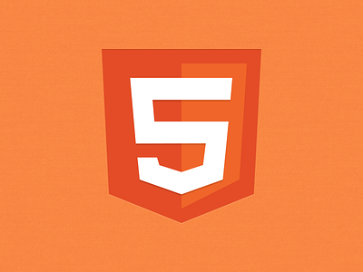

CSS
Cascading Style Sheet merupakan aturan untuk mengatur beberapa komponen dalam sebuah web sehingga akan lebih terstruktur dan seragam
Task
|  | ||
HTMLHypermark Markup Language adalah sebuah bahasa markah yang digunakan untuk membuat sebuah web |
|
|
|
CSSCascading Style Sheet merupakan aturan untuk mengatur beberapa komponen dalam sebuah web sehingga akan lebih terstruktur dan seragam |
 |
|
|
JavaScriptJavaScript adalah bahasa pemrograman tingkat tinggi dan dinamis. Kode JavaScript dapat disisipkan dalam halaman web menggunakan tag script |